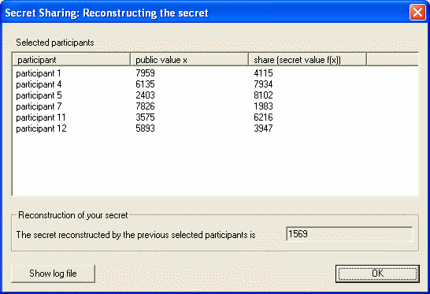
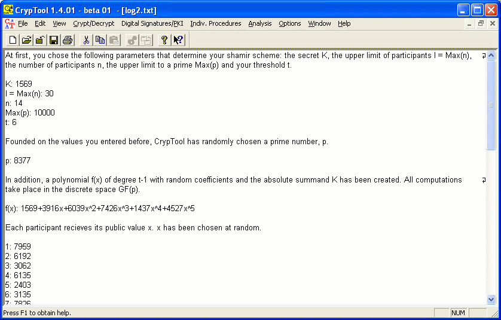

This dialog is displayed if you click the button Reconstruction in the dialog Secret Sharing Demonstration after computing the shares and selecting those participants that are to cooperate in reconstructing the secret.

The listbox now only displays those participants whose shares are used to compute the secret. Below, the reconstructed secret is displayed. All computations that have been carried out in the course of the Shamir scheme are saved within a log file. CrypTool will display this information in its main window if you choose the corresponding option. The file can be edited and saved as a text file.
